Verkefni 1 - Að hanna vefsíðu
Macbook leiðbeiningar Skref 1Ég þarf að ákveða hvernig vefsíðan á að lýta út. Byrja á að finna template fyrir vefsíðuna þína, ég notaði þessa síðu https://html5up.net/. Ég valdi hyperspace vegna einfaldleikann á hennar. Downloada möppunni inná síðunni og setja hana í verkefna folderinn á tölvunni þinni. Getur endurskýrt hana í verkefni 1 (heitir örugl html5up…).
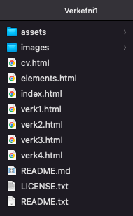
Til að búa til undirflokka að þá duplicateaði ég generic.html skránna og skýrði þær verk1-4
Skref 2Því næst er að finna forrit til að hanna, breyta og grúska í vefsíðunni. Hér ákvað ég að downloada Bracket, einfalt byrjendarviðmót. Virðist vera mjög mikið í byrjun en þetta er í raun bara eins og LaTex. Ég skoðaði bara youtube eða vefsíður hjá gömlum nemendum til að fá innblástur af hvernig ég gæti hannað vefsíðuna
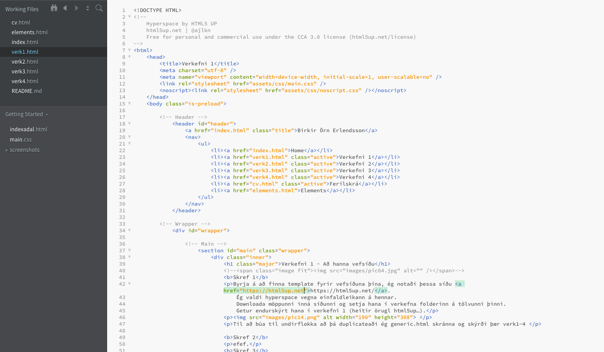
Skref 3Þegar vefsíðan er síðan klár að þá er næsta mál á dagskrá að opinbera hana. Til þess notaði ég git í gegnum github. En til að gera það verð ég fyrst að downloada Homebrew./ Það er minnsta mál. Þarft bara að fara í Terminal í gegnum Spotlight Search og setja eftirfarandi kóða
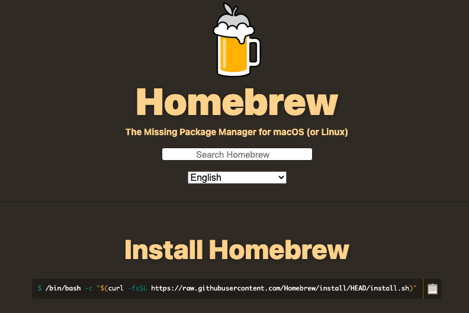
/bin/bash -c "$(curl -fsSL https://raw.githubusercontent.com/Homebrew/install/HEAD/install.sh)Síðan í beinu kjölfari setja inn
$ brew install gitNúna þarf ég að búa til github aðgang til að geta hostað síðunni. Ferð í gegnum hefðbundna new user ferlið. Því næst ferðu í vinstra hornið og gerir new repository
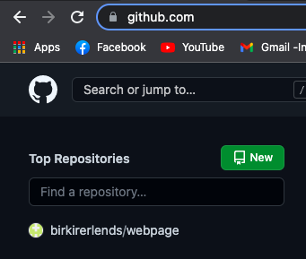
Skref 5Því næst veluru heiti á vefsíðunni. Þarft ekki að gera nafnið þitt né github.io í þennan reit því síðan heitir nú þegar nafniðþitt_nafniðsemþúveluríglugganum_github.io
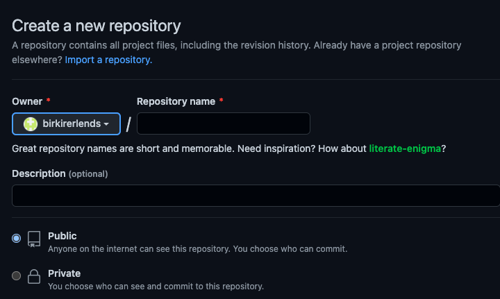
Skref 6Núna færðu þennan glugga en hinkraðu aðeins hér. Fer aftur tilbaka í þetta skref á eftir
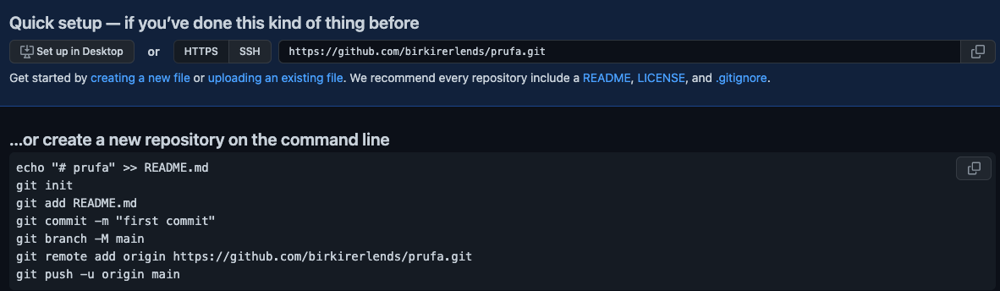
Skref 7Núna þarftu að finna hvar mappan þín er í tölvunni og hægri smella og velja new terminal at window. Þetta er til að einfalda kóða skipunar leit því þú ert að fara senda þessa möppu á github svo hægt að sé að uploada henni.
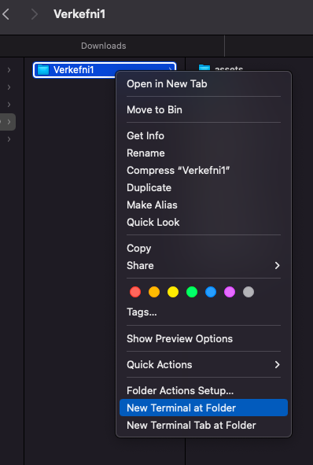
Skref 8Hér færðu þennan glugga upp og þar copy pastearu kóða textann sem github gaf þér. Copy allt í einu, negla inn og enter
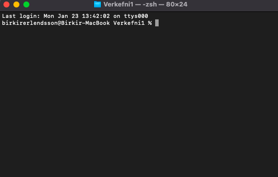
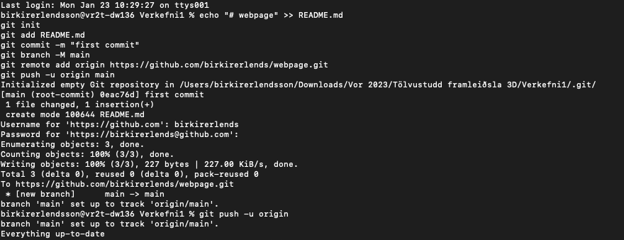
Skref 9Núna ferðu í settings lengst til hægri, finnur pages og velur branch úr none -> main
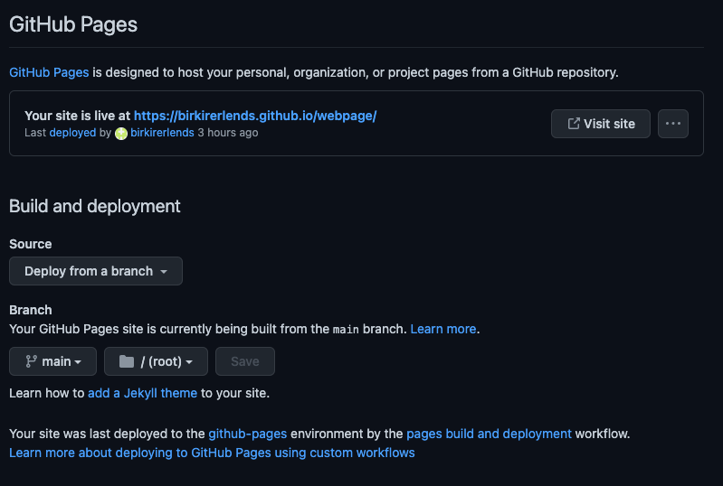
Skref 10Síðan ferðu tilbaka í code lengst til vinstri og þá ætti þetta að líta svona út. Vefsíðan ætti að vera ready núna
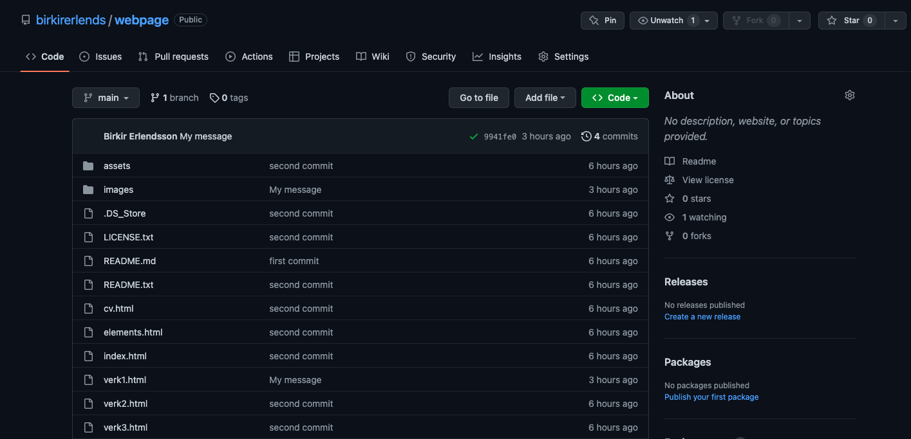
Skref 11Þegar þú gerir breytingar á vefsíðunni í Brackets og vilt uppfæra hana online að þá seturu inn eftirfarandi skipanir einar í einu. MIKILVÆGT að muna að gera alltaf terminal at window eins og gert var áðan
git initgit add . git commit -m "Valfrjáls skilaboð"git pushEf þú færð þessa villu að þá virkaði hjá mér að setja þessa skipun
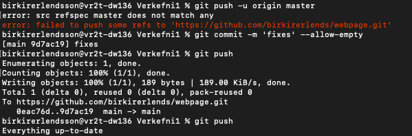
git commit -m "Valfrjáls skilaboð" --allow-emptyÁ einhverjum tímapunkti biður terminal um username og password til að tengjast við github. Ef það virkar ekki að slá inn passwordið og færð alltaf villu að þá er lausn. Ferð og finnur token inná github, það er í raun svo tímabundið password sem hægt er að nota til að forritin geti talað saman. Færð þetta token inná github í 90 daga eða eitthvað álíka og mundi að vista það einhversstaðar. Síðan þegar terminal biður þig umm password þá seturu token textann inn.